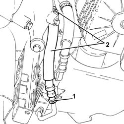

4130B78 RETURN PIPE FROM POWER STEERING CASE TO POWER STEERING FLUID RESEVIOR R R
- Path
- Procedures > 41 STEERING UNIT > 4130 POWER STEERING > 4130B POWER STEERING HYDRAULIC SYTEM > 4130B78 RETURN PIPE FROM POWER STEERING CASE TO POWER STEERING FLUID RESEVIOR R R
- Kind
- repair procedure (removal / refitting; the operation number is the code)
- Applies to
- engines: 3.2 V6; all production periods
- Interactive page
- https://sloeber94.github.io/elrnDB-aGt/en/#/125001421
Applies to: engines: 3.2 V6; all production periods
 Removing
Removing
 Refitting
RefittingPosition the vehicle on the ramp
Proceed with removal
Op. 7055B54 UNDER-ENGINE GUARD - R R
1. Disconnect the quick-release fitting on the rubber hose from radiator to the fluid reservoir rigid pipe, radiator side.
2. Loosen the band, disconnect the rubber pipe from the radiator to the rigid pipe to the fluid reservoir, rigid pipe side and remove it.

Applies to: engines: 3.2 V6; all production periods
Refitting
RemovingPlace the rubber hose from the radiator to the rigid return pipe to the fluid reservoir back in its housing, connect to the rigid pipe and tighten the band.
Connect the quick-release fitting on the rubber hose from radiator to the fluid reservoir rigid pipe, radiator side.
Proceed with refitting
Op. 7055B54 UNDER-ENGINE GUARD - R R.
Fill the power steering circuit with the recommended fluid.
 | Type | Component | Name | Qty. |
|---|---|---|---|---|
- | Fluid [l] | HYDRAULIC POWER ASSISTED STEERING SYSTEM | TUTELA GI/A | 1.2 |
Bleed the power steering system as described below
With the front wheels raised off the ground, with the engine switched off turn the steering wheel to full lock, left and right, 4-5 times.
Check and, if necessary, top up the fluid level in the reservoir.
Remove the car from the ramps.
Start the engine and carry out 4 - 5 full steering wheel turn cycles (right and left).
Top up the fluid level in the reservoir.